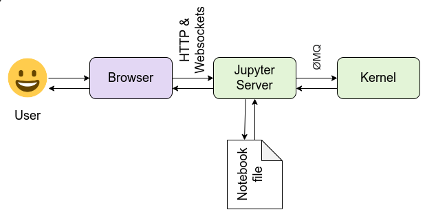

Python Virtual environments and Anaconda
a part of beyond basics python
Your guide for python virtual environment
*Note : all commands here are specific for Linux-based Operating systems*
*if you're a windows user consider using WSL or virtual Machine
Table of Contents
-
Introduction to Virtual Environments
1.1 What Is a Virtual Environment?
1.2 Why Virtual Environments Are Necessary
1.3 Virtual Environment Hierarchy and Files
1.4 Creating and Managing Python venv Environments
1.5 Sharing Virtual Environments -
Understanding Anaconda3 (Theoretically)
2.1 Overview of Anaconda3
2.2 Base Environment vs. User-Created Environments
2.3 Accessibility of Environments
2.4 How Anaconda Manages Its Environments
2.5 Environment Filesystem -
Practicing Anaconda3
3.1 Installation Process and Shell Configuration (Linux-Specific)
3.2 Basic Anaconda Commands
3.3 Working with environment.yml Files
3.4 Advanced Commands and Path-Specific Projects -
Anaconda Super User Customization
4.1 Advanced Environment Customizations
4.2 Shell Aliases and Shortcuts
4.3 Default Skeleton for Virtual Environments
4.4 mamba or conda or pip -
Jupyter Lab with Conda
5.1 Jupyter Lab Overview and Comparison
5.2 Installing and Managing Jupyter Lab
5.3 Jupyter Architecture and Kernel Registrations
5.4 Managing Jupyter Lab Extensions
1. Introduction to Virtual Environments
1.1 What is a Python Virtual environments and Anaconda
A virtual environment is a directory that includes a Python interpreter and its dependencies, isolated from the system’s global packages. Each virtual environment can contain a different set of libraries, allowing multiple projects to coexist without version conflicts.
1.2 Why Virtual Environments Are Necessary
- Dependency Isolation: Ensures that each project uses the specific versions of packages it needs.
- Reproducibility: Other developers can recreate the same environment to match your project setup.
- Avoiding Conflicts: Different projects can have different (and often incompatible) library versions.
- Minimal Global Footprint: Reduces clutter in the system-wide Python installation or the Anaconda base environment.
1.3 Virtual Environment Hierarchy and Files
A typical Python virtual environment contains something like:
myenv/
├── bin/
│ ├── activate
│ ├── python
│ └── pip
├── lib/
│ └── python3.11/
│ └── site-packages/
└── include/
- bin/: Houses utilities (e.g., Python executables and the
activatescript). - lib/: Contains installed libraries, typically under
site-packages. - include/: Stores header files for compiled modules or libraries.
1.4 Creating and Managing Python venv Environments
# Create a virtual environment with the built-in venv module
python3 -m venv myenv
# Activate the environment (Linux/Mac)
source myenv/bin/activate
# Activate the environment (Windows)
myenv\Scripts\activate
# Deactivate when done
deactivate
If you do not require Conda’s advanced dependency resolution or cross-language management, Python’s built-in venv is sufficient for many lightweight workflows.
1.5 Sharing Virtual Environments
When working on a project with others or setting up the same environment on another machine, you can share your virtual environment setup using a requirements file or a lock file.
Exporting Dependencies
pip freeze > requirements.txt
Recreating the Environment
python3 -m venv myenv # Create a new virtual environment
source myenv/bin/activate # Activate it (Windows: myenv\Scripts\activate)
pip install -r requirements.txt # Install dependencies
2. Understanding Anaconda3
2.1 Overview of Anaconda3
Anaconda3 is a distribution of Python and R widely used in data science due to its convenient packaging of essential libraries (NumPy, pandas, etc.). It ships with the Conda package manager, offering sophisticated dependency resolution and environment management.
- Anaconda vs Conda :
- Anaconda is a full-fledged distribution that includes Python, R, Conda, and many commonly used data science libraries.
- Conda is the package manager and environment manager that can be used independently from Anaconda (e.g., in Miniconda), allowing you to install only the packages you need.
2.2 Base Environment vs. User-Created Environments
- Base Environment:
The environment installed by default whens you set up Anaconda. It often includes fundamental data-science packages. - User-Created Environments:
These are additional environments made with Conda. You can isolate new projects in separate environments for optimal dependency management.
2.3 Accessibility of Environments
- System-Wide: Environments stored in a central directory (e.g.,
/opt/anaconda3/envs/) are accessible to all users on that system (with appropriate permissions). - Path-Specific: Environments created or moved to custom folders within a project directory. Useful for grouping your environment with the codebase itself (ensuring all required dependencies are self-contained).
2.4 How Anaconda Manages Its Environments
Conda keeps a versatile environment index.
Key commands:
| Action | Command |
|---|---|
| Create | conda create -n myenv python=3.11 |
| Activate | conda activate myenv |
| Deactivate | conda deactivate |
| Remove | conda env remove -n myenv |

2.5 Environment Filesystem
Within an Anaconda install, you commonly find a layout like:
/opt/anaconda3/
├── envs/
│ ├── base/
│ ├── myenv/
│ └── ...
└── ...
envs/: Subdirectory that stores multiple Conda environments.environment.yml: A YAML file used to record or reconstruct specific environments. It includes dependencies, Python version, and more.
3. Practicing Anaconda3
3.1 Installation Process and Shell Configuration (Linux-Specific)
# 1) Download the installer (e.g. Anaconda3-*.sh) from the official website
# 2) Run the installer
bash Anaconda3-*.sh
# 3) Follow the prompts and accept license terms
# 4) Add Conda to your PATH in ~/.bashrc or ~/.zshrc when asked
source ~/.bashrc # or source ~/.zshrc
3.2 Basic conda Commands
# Display Conda info (including environment locations)
conda info
# Show version
conda --version
# List installed packages
conda list
# Update Conda itself
conda update conda
# Create a new environment
conda create -n myenv python=3.11
# Activate/deactivate environment
conda activate myenv
conda deactivate
# List environments
conda env list
# Remove an environment
conda env remove -n myenv
3.3 Working with environment.yml Files
environment.yml files facilitate environment replication and sharing. The structure includes:
name: myenv
channels:
- defaults
dependencies:
- python=3.11 # pinned Python version
- numpy # external dependencies
- pandas
- matplotlib
- jupyterlab
- ipykernel
- pip
-
name: The environment name (e.g.,
myenv). -
channels: Source(s) where packages are fetched (e.g.,
defaults,conda-forge, etc.). -
dependencies: Packages (with optional versions). You can also specify pip requirements by including:
- pip: - my-special-library==1.2.3 -
Usage:
# Create an environment from a YAML file conda env create -f environment.yml # Export an existing environment conda env export > environment.yml
3.4 Advanced Commands and Path-Specific Projects
If you want to create a Conda environment in a project-specific folder, run:
conda create --prefix /home/user/projects/my_project/env python=3.11
-
Why Path-Specific?
- Keeps your environment localized to the project directory.
- Eases portability when sharing code (especially if you commit environment files or relocate the entire folder).
-
Activating a Path-Specific Environment:
conda activate /home/user/projects/my_project/env -
Listing Packages for Projects:
conda list --prefix /home/user/projects/my_project/envThis approach helps you precisely control the environment location without cluttering the
globalenvs/directory. -
Advanced commands (CheatSheet):
# 1. Install a package from a specific channel (e.g., conda-forge)
conda install -n myenv -c conda-forge scikit-learn
# 2. Downgrade a package to a specific version
conda install -n myenv numpy=1.18
# 3. Show environment details (including active packages)
conda list -n myenv
# 4. Clone an existing environment
conda create --name newenv --clone oldenv
# 5. Update all packages in an environment
conda update --all
# 6. Check for outdated packages
conda update --dry-run # Shows what would be updated
# 7. Search for a package across all channels
conda search <package-name>
# 8. Install a package from a .tar.bz2 file
conda install /path/to/package.tar.bz2
# 9. Remove a specific package from an environment
conda remove -n myenv package_name
# 10. Clean unused packages and caches
conda clean --all # Frees up disk space
4. Anaconda Super User Customization
4.1 Advanced Environment Customizations
Advanced users often configure .condarc or environment variables to override default Conda behaviors (e.g., specifying custom channels, turning off auto_activate_base, etc.). These settings can significantly streamline and automate environment workflows.
4.2 Shell Aliases and Shortcuts
Editing your ~/.bashrc or ~/.zshrc to include aliases is a simple productivity boost:
alias activate_ds="conda activate data-science"
alias activate_ml="conda activate machine-learning"
alias envs="conda env list"
alias jl="jupyter lab"
Reload your shell:
source ~/.bashrc # or source ~/.zshrc
4.3 Default Skeleton for Virtual Environments
You may create a “skeleton” directory that holds:
my_skeleton/
├── environment.yml
├── src/
│ └── ...
├── tests/
│ └── ...
└── README.md
- Purpose: Ensures every new project has a standardized layout.
- Usage: Copy this skeleton when starting a new project, then run:
This seamlessly provisions your environment with predefined settings (e.g., pinned Python versions, essential packages).cd new_project conda env create -f environment.yml
4.4 mamba or conda or pip
-
Pip:
Python’s default package installer. Ideal for lightweight virtual environments (using venv) and installing packages from PyPI. -
Conda:
A robust environment and package manager from Anaconda/Miniconda. It manages dependencies well, especially for data science projects. -
Mamba:
A faster, C++ reimplementation of Conda. It uses the same commands as Conda but speeds up package resolution and installation.
Code Snippets
# ----- Using Pip (with venv) -----
python3 -m venv myenv
source myenv/bin/activate
pip install numpy pandas scikit-learn
# ----- Using Conda -----
conda create -n myenv python=3.11 -y
conda activate myenv
conda install numpy pandas scikit-learn -y
# ----- Using Mamba -----
# First, install mamba in your base environment if not already installed:
conda install mamba -n base -c conda-forge -y
# Then create and activate an environment, and install packages:
mamba create -n myenv python=3.11 -y
conda activate myenv
mamba install numpy pandas scikit-learn -y
Pro Tips
- Never mix
condaandpipin the same environment until all conda options are exhausted. - Use
mambafor daily conda operations and fall back tocondaonly if edge-case errors occur. - Prefer
conda-forgechannel for newer packages
conda config --add channels conda-forge
conda config --set channel_priority strict
5. Jupyter Lab with Conda
5.1 Jupyter Lab Overview and Comparison
Jupyter Lab is a powerful IDE-like environment built on top of Jupyter Notebook technology. It integrates notebooks, terminals, file explorers, and more in a flexible UI.
- Jupyter Lab vs. Google Colab:
- Jupyter Lab: Run locally or on a server you control, offering complete customizability of packages/kernels.
- Google Colab: A cloud-based environment with pre-installed packages but limited customization for local library installation.
5.2 Installing and Managing Jupyter Lab
A common practice is to install Jupyter Lab in the base environment:
conda install -n base jupyterlab nb_conda_kernels ipykernel
- jupyterlab: The core application.
- nb_conda_kernels: Detects kernels from all Conda environments, making them selectable in Jupyter.
- ipykernel: Enables registering Python environments as Jupyter kernels.
5.3 Jupyter Architecture and Kernel Registrations
Architectural Overview
Jupyter’s architecture can be broken down into three main components:
- Client (Front-End):
- JupyterLab or Notebook interface where code cells are written and rendered.
- Jupyter Server:
- Manages incoming requests from the client and dispatches them to the appropriate kernel.
- Handles saving notebooks, etc.
- Kernel:
- The computing engine that executes the code. For Python, the kernel is typically powered by
ipykernel.
- The computing engine that executes the code. For Python, the kernel is typically powered by

source
What Is Kernel Registration?
- Kernel Registration: The process of informing Jupyter about a specific environment (kernel) so Jupyter Lab can launch and run code within that environment.
- How It Works:
- You install
ipykernelin a given environment. - You run a registration command to add that environment to Jupyter’s kernel list:
conda activate myenv python -m ipykernel install --user --name myenv --display-name "Python (myenv)" - Jupyter stores the kernel specification (usually in
~/.local/share/jupyter/kernels/myenv/on Linux) so that environment can be selected from the Jupyter Lab UI.
- You install
By registering multiple environments as kernels, you can switch between them easily within Jupyter Lab—perfect for testing different versions of libraries or using different Python interpreters for various tasks.
5.4 Managing Jupyter Lab Extensions (JupyterLab 3.x+) CheatSheet :
# Install a specific extension (e.g., Table of Contents)
pip install jupyterlab-toc
# Install an extension using Conda (if available)
conda install -c conda-forge jupyterlab-toc
# Install multiple useful extensions with pip
pip install jupyterlab-git jupyterlab-toc jupyterlab-variableinspector jupyterlab-lsp python-lsp-server
# Install multiple useful extensions with Conda
conda install -c conda-forge jupyterlab-git jupyterlab-toc jupyterlab-variableinspector jupyterlab-lsp python-lsp-server
# Update JupyterLab and all installed extensions (pip)
pip install --upgrade jupyterlab
# Update all JupyterLab extensions (pip)
pip install --upgrade jupyterlab-git jupyterlab-toc jupyterlab-variableinspector jupyterlab-lsp python-lsp-server
# Update JupyterLab and all installed extensions (Conda)
conda update -c conda-forge jupyterlab
# Update a specific extension (pip)
pip install --upgrade jupyterlab-toc
# Update a specific extension (Conda)
conda update -c conda-forge jupyterlab-toc
# Uninstall an extension (pip)
pip uninstall jupyterlab-toc
# Uninstall an extension (Conda)
conda remove jupyterlab-toc
# Remove multiple extensions (pip)
pip uninstall jupyterlab-git jupyterlab-variableinspector
# Remove multiple extensions (Conda)
conda remove jupyterlab-git jupyterlab-variableinspector
# List all installed JupyterLab extensions (pip)
pip list | grep jupyterlab
# List all installed JupyterLab extensions (Conda)
conda list | grep jupyterlab
# Check available kernels in JupyterLab
jupyter kernelspec list
# Restart JupyterLab to apply changes
jupyter lab build
JupyterLab extensions are now managed as Python packages, making installation easier. Useful extensions include:
jupyterlab-toc– Table of Contentsjupyterlab-git– Git integrationjupyterlab-variableinspector– Variable Explorer